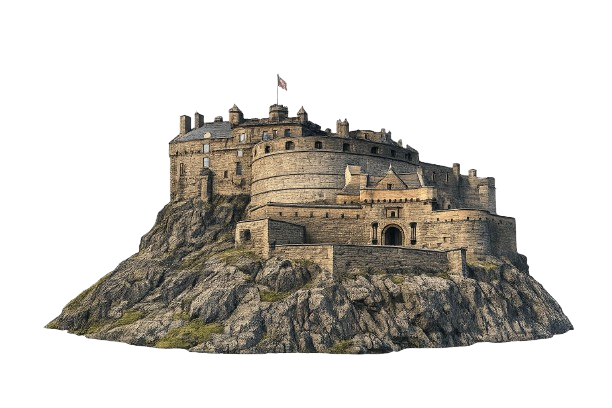

Starting camera...
Point your camera at the tin
to begin your story journey.
The story will play automatically.

Thank you for journeying with TinsTale UK.
Use this code at checkout:
History is something you can hold
in your hands, grow in your home,
and wear on your heart.